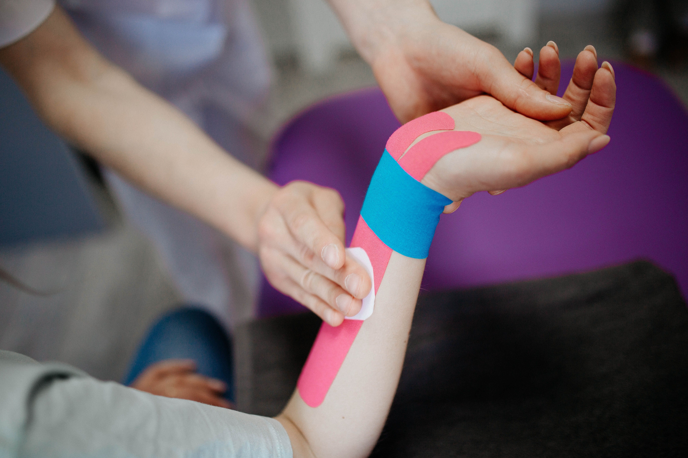

Treatments治疗

Moxibustion艾灸
With burning herbs near the skin, it stirs the qi to flow within.艾草温熏近肌肤,气血调畅通经络。

Sports Injury运动损伤
Skilled hands mend strain and sprain, restoring strength, easing pain.巧手疗伤,筋骨舒展,力复如常。

Cupping Therapy拔罐疗法
With gentle cups that lift and glide, they draw out tension trapped within.轻罐提滑之间,郁结随之而散。

Manual Therapy推拿疗法
A skilled adjustment, snap and spin, realigns the strength within.巧手一整,骨正筋柔,力从中生。

Acupuncture Therapy针灸疗法
Fine needles find the meridian's line, releasing stagnation, awakening qi.细针入穴,气脉通畅,郁结自解,元气归来。

Herbal Medicine中药调理